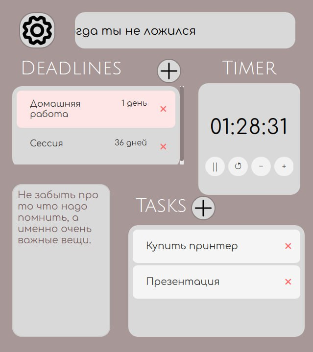

About

Основной идеей нашего приложения является облегчение отслеживания
рабочих задач и их сроков на сдачу.
Мы превращаем рабочий стол в интеллектуальный командный центр, где все важное всегда перед глазами.
Больше не нужно искать письма на почте, лазать по рабочим чатам и заметкам в поисках несданных задач:
всё собрано в едином пространтсве.
Ставь сроки на дедлайн и отслеживай количество дней до его окончания, а цветная подсветка в последние дни подскажет тебе, что с этой работой нужно справиться как можно скорее.
Записывай задачи и веди свой ToDoList не заходя на сторонние сервисы.
Нужно что-то зафиксировать на скорую руку - под рукой всегда блок для заметок!
Никаких лишних действий, только чистый фокус на задачах.
Contact
Download
About
Основной идеей нашего приложения является облегчение отслеживания рабочих задач и их сроков на сдачу.
Мы превращаем рабочий стол в интеллектуальный командный центр, где все важное всегда перед глазами. Больше не нужно искать письма на почте, лазать по рабочим чатам и заметкам в поисках несданных задач: всё собрано в едином пространтсве.
Ставь сроки на дедлайн и отслеживай количество дней до его окончания, а цветная подсветка в последние дни подскажет тебе, что с этой работой нужно справиться как можно скорее. Записывай задачи и веди свой ToDoList не заходя на сторонние сервисы. Нужно что-то зафиксировать на скорую руку - под рукой всегда блок для заметок!
Никаких лишних действий, только чистый фокус на задачах.